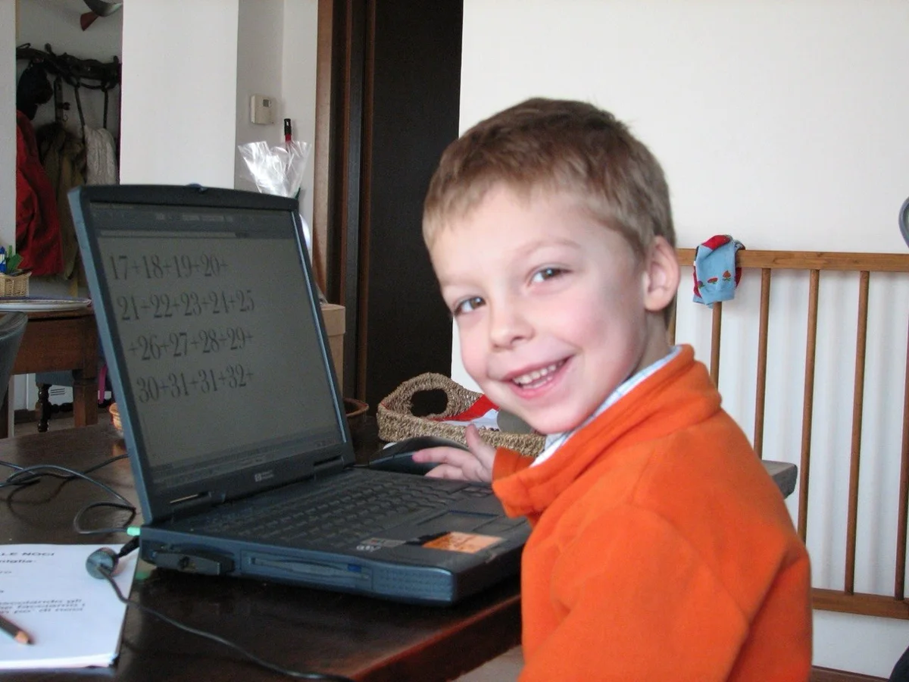

Childhood
Curious before anything else.
My parents say I was always building something: model cars, LEGO, anything I could get my hands on. It was with my grandfather that this became a real passion for building, taking things apart and putting them back together.
It left me with the habit I still rely on. When I don't know what to do, I create something new.
